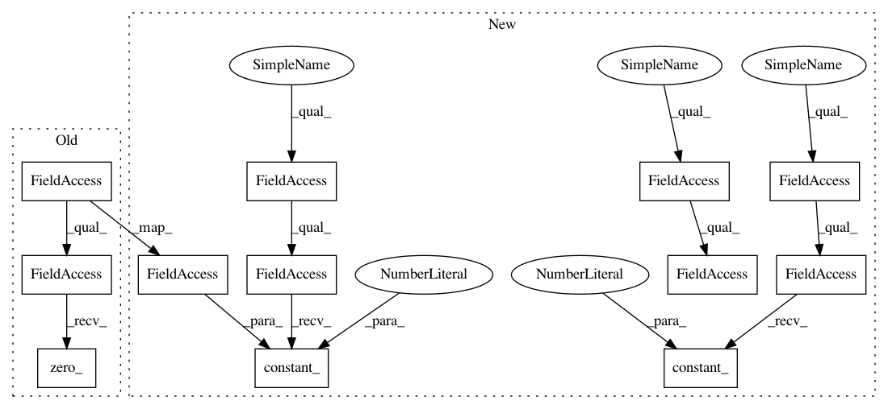

4a53e30fafdd8c65c42d0cf978312e6333182db4,modules/bn.py,InPlaceABN,reset_parameters,#InPlaceABN#,86
Before Change
self.running_var.fill_(1)
if self.affine:
self.weight.data.fill_(1)
self.bias.data.zero_()
def forward(self, x):
return inplace_abn(x, self.weight, self.bias, autograd.Variable(self.running_mean),
autograd.Variable(self.running_var), self.training, self.momentum, self.eps,
After Change
self.reset_parameters()
def reset_parameters(self):
nn.init.constant_(self.running_mean, 0)
nn.init.constant_(self.running_var, 1)
if self.affine:
nn.init.constant_(self.weight, 1)
nn.init.constant_(self.bias, 0)
def forward(self, x):
return inplace_abn(x, self.weight, self.bias, self.running_mean, self.running_var,
self.training, self.momentum, self.eps, self.activation, self.slope)
In pattern: SUPERPATTERN
Frequency: 3
Non-data size: 12
Instances
Project Name: mapillary/inplace_abn
Commit Name: 4a53e30fafdd8c65c42d0cf978312e6333182db4
Time: 2018-05-21
Author: lorenzo@mapillary.com
File Name: modules/bn.py
Class Name: InPlaceABN
Method Name: reset_parameters
Project Name: mapillary/inplace_abn
Commit Name: 4a53e30fafdd8c65c42d0cf978312e6333182db4
Time: 2018-05-21
Author: lorenzo@mapillary.com
File Name: modules/bn.py
Class Name: InPlaceABNSync
Method Name: reset_parameters
Project Name: mapillary/inplace_abn
Commit Name: 4a53e30fafdd8c65c42d0cf978312e6333182db4
Time: 2018-05-21
Author: lorenzo@mapillary.com
File Name: modules/bn.py
Class Name: InPlaceABN
Method Name: reset_parameters
Project Name: kenshohara/3D-ResNets-PyTorch
Commit Name: 7a90d38920857d0155f3cbbfd36d1f5cb91e8eba
Time: 2018-10-30
Author: kensho.hara@aist.go.jp
File Name: models/densenet.py
Class Name: DenseNet
Method Name: __init__